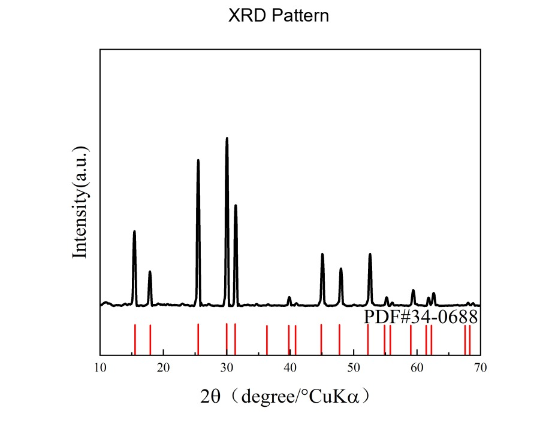
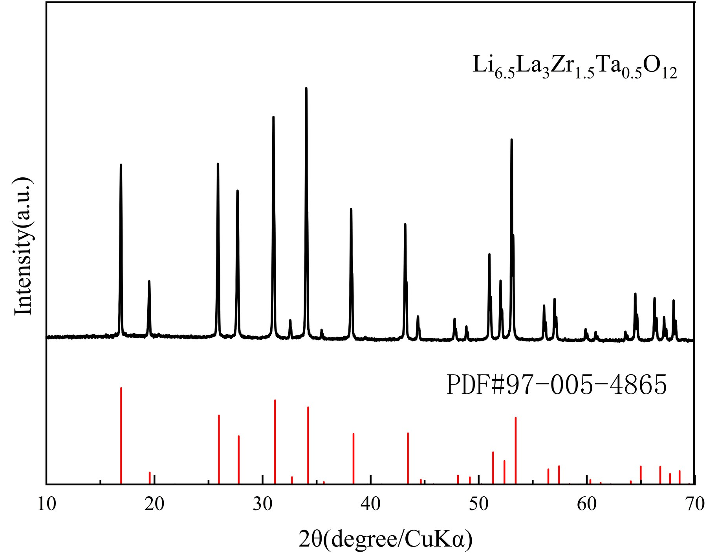

Solid-state electrolyte powders are often compared by headline ionic conductivity, but conductivity alone rarely tells the full story. In practical solid-state battery development, a powder's performance depends on particle-size distribution, pellet density, pressing pressure, electronic conductivity, moisture content, phase purity, impurity profile, morphology, and interface behavior.
Winigen Materials' solid-state electrolyte catalog is designed around this practical comparison logic. The product family includes oxide powders and slurries, LLZTO garnet-type oxide powder, argyrodite-style sulfide powders with controlled D50 ranges, and Li3InCl6 halide powder with particle-size and conductivity data.
Start with Chemistry, but Do Not Stop There
Solid-state electrolytes are usually grouped into sulfide, oxide, halide, polymer, or hybrid systems. Chemistry matters because each material family has different strengths and limitations. Sulfides often offer high ionic conductivity and cold-press processability. Oxides may offer better handling robustness and chemical stability. Halides are increasingly studied for high-voltage cathode compatibility.
However, materials within the same family can behave very differently depending on particle size, morphology, phase purity, and processing history. Chemistry should be treated as the first filter, not the final selection criterion.
Compare Ionic Conductivity Only Under Similar Test Conditions
Ionic conductivity is important, but it should never be interpreted without the test method. A reported value may depend on pellet density, pressing pressure, pellet thickness, temperature, electrode configuration, and EIS fitting method.
For example, Winigen lists LATP oxide powders with several particle-size grades. The LATP D50 0.30 um powder is specified at ≥0.55 mS/cm at 25 °C, pressed pellet, while the D50 0.40 um and D50 0.65 um grades are listed at ≥0.50 mS/cm and ≥0.30 mS/cm, respectively, under pressed-pellet conditions.
This is useful because the conductivity value appears together with particle-size grade and test format. Without that context, a conductivity number is difficult to compare across suppliers or material families.
| Question | Why It Matters |
|---|---|
| Was the sample tested as powder, pellet, film, slurry coating, or composite electrode? | Different formats give different effective conductivity. |
| What was the pellet density? | Poor density can make a good material look bad. |
| What pressing pressure was used? | Sulfides and oxides respond differently to pressure. |
| Was the test done at 25 °C or another temperature? | Conductivity is temperature-dependent. |
| Was the conductivity ionic, electronic, or total? | Solid electrolytes should conduct ions while blocking electrons. |
| Was the value measured by EIS? | Fitting method and equivalent circuit can affect interpretation. |
Particle-Size Distribution Matters More Than D50 Alone
D50 is useful, but it is not enough. A powder with the same D50 can still have a different D10, D90, agglomeration state, and morphology. These factors affect packing, contact area, slurry behavior, composite cathode mixing, and pellet densification.
Winigen's Li5.5PS4.5Cl1.5, D50 2.168 um sulfide powder lists the full particle-size distribution: D10 0.567 um, D50 2.168 um, D90 6.592 um. The same page also reports 8.5 mS/cm ionic conductivity, 1.38 x 10-6 mS/cm electronic conductivity, 28.8 ppm water, ICP impurity data, and supporting PSD, XRD, and SEM images.
That is much more useful than a simple "high-conductivity sulfide powder" listing.
| Particle-Size Feature | Practical Effect |
|---|---|
| Smaller D50 | Higher contact area; potentially better composite mixing; possibly higher surface reactivity. |
| Larger D50 | Different packing behavior; may reduce some surface-driven reactions; may support different cold-press behavior. |
| Broad D90 tail | Can affect coating uniformity, pellet defects, and composite electrode homogeneity. |
| Agglomeration | Can reduce usable contact area even when nominal D50 looks attractive. |
| Morphology | Influences powder flow, pressing, mixing, slurry stability, and interface contact. |



Track Electronic Conductivity Separately
Solid electrolytes must conduct lithium ions while blocking electrons. If electronic conductivity is too high, the material can contribute to self-discharge, internal side reactions, lithium filament growth, or poor long-term stability.
This is why it is useful when sulfide product pages report ionic and electronic conductivity separately. For example, Winigen's Li6PS5Cl, D50 2.123 um page lists 3.5 mS/cm ionic conductivity and 1.74 x 10-6 mS/cm electronic conductivity, along with water content, ICP impurity data, PSD, and XRD information.


Moisture Content Is a Screening Variable
Moisture can change the behavior of solid electrolyte powders, especially sulfides and some halides. It can affect surface chemistry, phase stability, conductivity, interfacial impedance, gas generation, and reproducibility.
Winigen's updated product pages make this point by listing water content or water specifications. The Li5.5PS4.5Cl1.5, D50 2.168 um sulfide page reports 28.8 ppm water, while the Li6PS5Cl, D50 2.123 um page reports 43 ppm water. The Li3InCl6, D50 0.9 um halide product page specifies water ≤500 ppm and includes conductivity and XRD phase data.
For customers, the practical lesson is simple: do not interpret conductivity, interfacial resistance, or cycling data unless moisture exposure and handling conditions are controlled.

Use XRD and SEM to Confirm What the Powder Actually Is
Solid-state electrolyte powders should be supported by characterization data whenever possible. XRD helps confirm phase identity, while SEM helps show morphology and particle appearance.
The LATP D50 0.30 um page includes SEM and XRD supporting images, along with D50, water, magnetic impurities, ionic conductivity, and cathode-blending use-case guidance. The LLZTO powder page also includes SEM and XRD images and describes the material as a Ta-doped LLZO/LLZTO garnet-type oxide solid electrolyte powder for garnet electrolyte screening, composite electrolyte studies, and coating development.
For a customer-facing screening guide, this matters because powder comparison is not only electrochemical. It is structural, morphological, and process-driven.



Pellet Density and Pressing Pressure Can Change the Result
A solid electrolyte powder does not become a useful electrolyte layer just because the powder itself is conductive. Pellets and dense layers require particle contact, densification, and mechanical integrity.
This is especially important because solid-state batteries rely on solid-solid contact. Mechanical effects, pressure distribution, void formation, and interfacial stress can strongly influence charge transfer and failure. A Science review on solid-state battery mechanics emphasizes that stress, strain, and contact evolution can be central to solid-state cell performance.
In practice, pellet data should be reported with pellet diameter, pellet thickness, pellet density or relative density, pressing pressure, hold time, hot-press or cold-press condition, blocking electrode material, temperature, and EIS fitting model.
This is why "cold press" or "pressed pellet" language matters in product data. It tells the user that the conductivity value belongs to a specific processing condition, not an abstract material property.
Interface Testing Is the Real Translation Step
After powder and pellet screening, the next question is interface behavior. Solid-state battery performance depends heavily on the quality of contact between solid electrolyte and lithium metal, cathode active material, conductive carbon, coating/interlayer, and electrolyte particles inside composite cathodes.
Studies of lithium metal and sulfide solid electrolyte interfaces show that current density can change interphase formation. A Nature Communications study on the lithium | Li6PS5Cl interface found that plating current density affected interphase formation, including formation of a more uniform, ionically conductive Li3P-rich SEI that reduced interfacial resistance. Operando X-ray tomography work has also shown that void formation at the lithium | solid electrolyte interface can be linked to electrochemical behavior and failure.
A serious screening workflow should therefore include lithium-metal symmetric cells, cathode composite testing, impedance tracking, pressure sensitivity, and post-cycling diagnostics.
Practical Solid-State Powder Comparison Framework
| Screening Stage | What to Compare | Why It Matters |
|---|---|---|
| Powder identity | Chemistry, XRD, phase purity | Confirms the material is the intended phase. |
| Morphology | SEM, agglomeration, particle shape | Affects mixing, pressing, contact, and coating. |
| Particle size | D10, D50, D90, D99 if available | Determines packing, contact area, and slurry behavior. |
| Moisture | Water content, handling history | Controls reproducibility and side reactions. |
| Impurities | ICP, magnetic impurities | Relevant for stability, electronic leakage, and contamination. |
| Pellet behavior | Density, pressure, thickness | Determines whether conductivity is meaningful. |
| Conductivity | Ionic and electronic separately | Solid electrolytes need high ionic and low electronic conductivity. |
| Interface testing | Li symmetric cells, cathode composites, EIS | Determines practical cell compatibility. |
| Process fit | Dry mixing, slurry coating, pressing, lamination | Determines whether the material can move toward scale-up. |
Winigen Product Data Examples
| Product | Family | Available Data | Screening Relevance |
|---|---|---|---|
| LATP powder, D50 0.30 um | Oxide | D50 0.30 +/- 0.05 um; water ≤500 ppm; magnetic impurities ≤500 ppb; ionic conductivity ≥0.55 mS/cm; SEM and XRD | Oxide powder with particle size, impurity, conductivity, and image support. |
| LLZTO powder | Oxide / garnet | Customizable particle size; Ta-doped LLZO/LLZTO; SEM and XRD; coating and composite electrolyte use case | Customizable garnet oxide screening. |
| Li5.5PS4.5Cl1.5, D50 2.168 um | Sulfide | D10/D50/D90; 8.5 mS/cm ionic; 1.38 x 10-6 mS/cm electronic; 28.8 ppm water; ICP; PSD/XRD/SEM | Complete sulfide characterization package. |
| Li6PS5Cl, D50 2.123 um | Sulfide | D10/D50/D90; 3.5 mS/cm ionic; 1.74 x 10-6 mS/cm electronic; 43 ppm water; ICP; PSD/XRD | Argyrodite sulfide example for conductivity and interface discussion. |
| Li3InCl6, D50 0.9 um | Halide | D10/D50/D90/D99; water ≤500 ppm; measured 1.85 mS/cm at 25 °C; XRD main phase; ICP limits; PSD image | Halide example for high-voltage/cathode-side screening. |
Bottom Line
Solid-state electrolyte powders should be compared as practical battery materials, not just as chemical names. The most useful comparison includes conductivity, particle-size distribution, moisture content, electronic leakage, phase identity, morphology, pellet preparation, interface behavior, and process fit.
A powder that looks excellent in a pressed pellet may still fail in a composite cathode or lithium-metal full cell. Conversely, a material with moderate conductivity may be valuable if it offers better handling, lower electronic leakage, better cathode compatibility, or more reproducible processing.
At Winigen Materials, we support solid-state battery researchers with oxide, sulfide, and halide electrolyte powders, selected slurry formats, particle-size-controlled grades, characterization data, and RFQ-based material matching for practical solid-state battery development.
References
- Kalnaus et al., Solid-state batteries: The critical role of mechanics, Science 381, eabg5998 (2023).
- Narayanan et al., Effect of current density on the solid electrolyte interphase formation at the lithium|Li6PS5Cl interface, Nature Communications 13, 7237 (2022).
- Lu et al., The void formation behaviors in working solid-state Li-metal batteries revealed by operando x-ray tomography, Science Advances 8, eadd0510 (2022).
- Li et al., Air-stable Li3InCl6 electrolyte with high voltage compatibility for all-solid-state batteries, Energy & Environmental Science 12, 2665-2671 (2019).